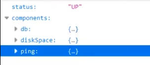
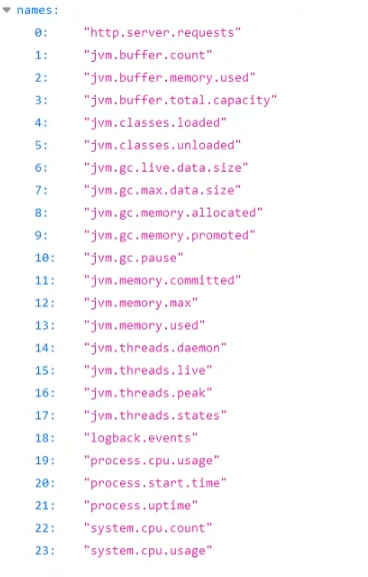

SpringBoot 指标监控
1. SpringBoot Actuator
未来每一个微服务在云上部署以后，我们都需要对其进行监控、追踪、审计、控制等。SpringBoot就抽取了Actuator场景，使得我们每个微服务快速引用即可获得生产级别的应用监控、审计等功能。
1.1 引入依赖
1 | <dependency> |
1.2 如何使用
- 引入场景
- 暴露所有监控信息为HTTP
1 | #management 是所有actuator的配置 |
（一般格式：http://localhost:8080/actuator/endpointName/detailPath ）
例如：
http://localhost:8080/actuator/beans
http://localhost:8080/actuator/configprops
http://localhost:8080/actuator/metrics
http://localhost:8080/actuator/metrics/jvm.gc.pause
2. Actuator Endpoint
常用端点：
| ID | 描述 |
|---|---|
auditevents |
暴露当前应用程序的审核事件信息。需要一个AuditEventRepository组件。 |
beans |
显示应用程序中所有Spring Bean的完整列表。 |
caches |
暴露可用的缓存。 |
conditions |
显示自动配置的所有条件信息，包括匹配或不匹配的原因。 |
configprops |
显示所有@ConfigurationProperties。 |
env |
暴露Spring的属性ConfigurableEnvironment |
flyway |
显示已应用的所有Flyway数据库迁移。 需要一个或多个Flyway组件。 |
health |
显示应用程序运行状况信息。 |
httptrace |
显示HTTP跟踪信息（默认情况下，最近100个HTTP请求-响应）。需要一个HttpTraceRepository组件。 |
info |
显示应用程序信息。 |
integrationgraph |
显示Spring integrationgraph 。需要依赖spring-integration-core。 |
loggers |
显示和修改应用程序中日志的配置。 |
liquibase |
显示已应用的所有Liquibase数据库迁移。需要一个或多个Liquibase组件。 |
metrics |
显示当前应用程序的“指标”信息。 |
mappings |
显示所有@RequestMapping路径列表。 |
scheduledtasks |
显示应用程序中的计划任务。 |
sessions |
允许从Spring Session支持的会话存储中检索和删除用户会话。需要使用Spring Session的基于Servlet的Web应用程序。 |
shutdown |
使应用程序正常关闭。默认禁用。 |
startup |
显示由ApplicationStartup收集的启动步骤数据。需要使用SpringApplication进行配置BufferingApplicationStartup。 |
threaddump |
执行线程转储。 |
如果应用程序是Web应用程序（Spring MVC，Spring WebFlux或Jersey），则可以使用以下附加端点：
| ID | 描述 |
|---|---|
heapdump |
返回hprof堆转储文件。 |
jolokia |
通过HTTP暴露JMX bean（需要引入Jolokia，不适用于WebFlux）。需要引入依赖jolokia-core。 |
logfile |
返回日志文件的内容（如果已设置logging.file.name或logging.file.path属性）。支持使用HTTPRange标头来检索部分日志文件的内容。 |
prometheus |
以Prometheus服务器可以抓取的格式公开指标。需要依赖micrometer-registry-prometheus。 |
最常用的：
- Health：监控状况
- Metrics：运行时指标
- Loggers：日志记录
2.1 Health Endpoint
健康检查端点，一般用于在云平台，平台会定时的检查应用的健康状况，我们就需要Health Endpoint可以为平台返回当前应用的一系列组件健康状况的集合。

2.2 Metrics Endpoint
提供详细的、层级的、空间指标信息，这些信息可以被pull（主动推送）或者push（被动获取）方式得到
通过Metrics对接多种监控系统
简化核心Metrics开发
添加自定义Metrics或者扩展已有Metrics

如果想要更详细的信息，可以二次请求：
http://localhost:8080/actuator/metrics 访问上图页面，比如要查看jvm.gc.pause的详细信息，发送请求：
http://localhost:8080/actuator/metrics/jvm.gc.pause
2.3 管理Endpoints
需要开启或禁用某个Endpoint：management.endpoint.endpointName.enabled = true / false
可以禁用所有的Endpoint然后手动开启指定的Endpoint：
1 | management: |
3. 定制Endpoint
3.1 定制Health信息
1 |
|
3.2 定制info信息
常用两种方式：
- 编写配置文件
1 | info: |
- 编写InfoContributor
1 | import java.util.Collections; |
发送 http://localhost:8080/actuator/info 会输出以上方式返回的所有info信息
3.3 定制Metrics信息
1 | class MyService{ |
3.4 定制Endpoint
1 |
|